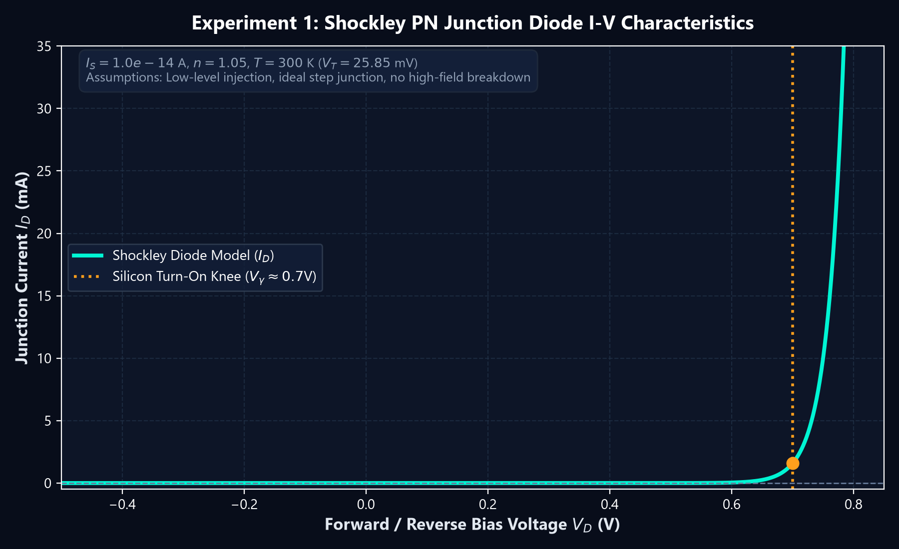
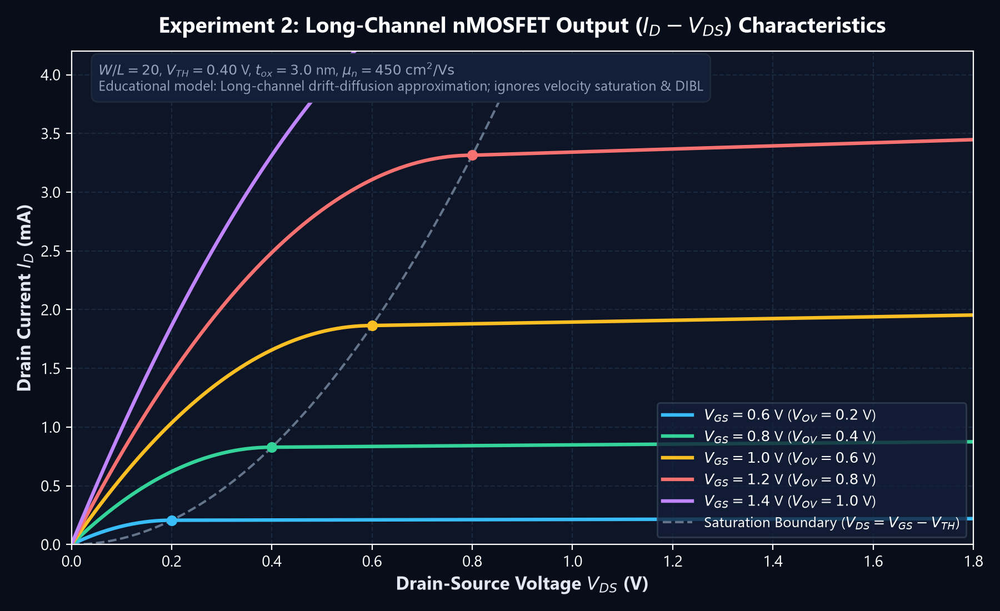
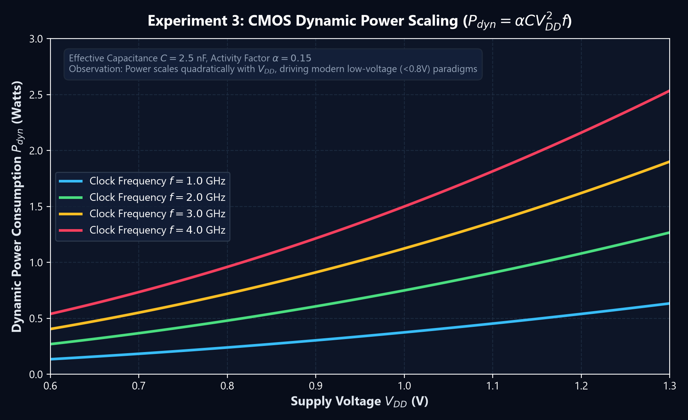
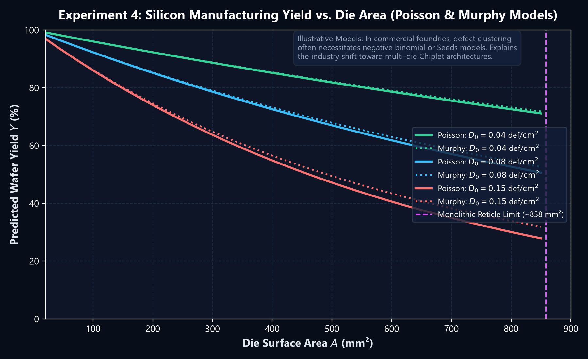
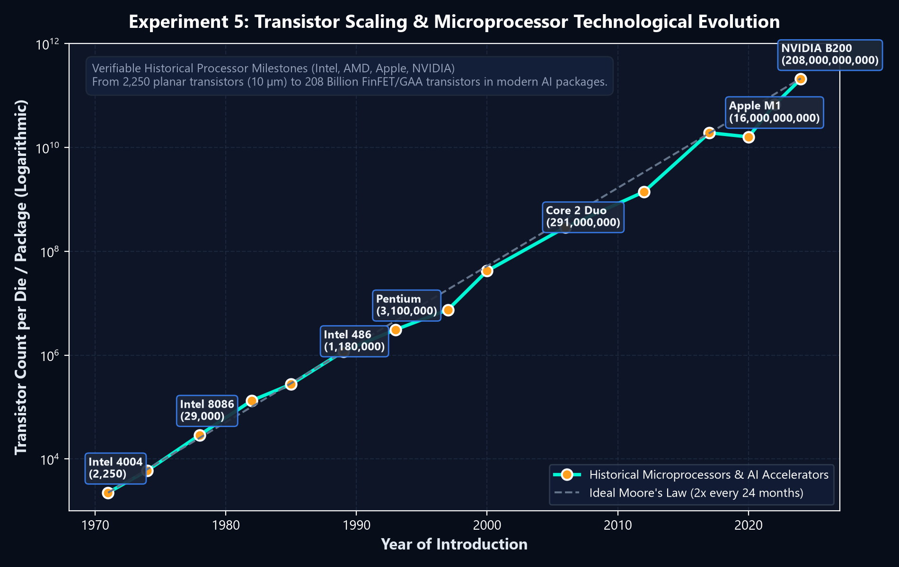

SEMICONDUCTORS — THE NEW OIL OF THE FUTURE
The Foundation of the Modern Technological Era
An intellectual academic conversation between Senior Semiconductor Scientist Dr. Theodore Voss and Microelectronics Researcher Dr. Caleb Sterling. Exploring solid-state physics, EUV nanofabrication, genuine MATLAB engineering computations, and the geopolitical battle for the silicon frontier.
Assumes ideal step PN junction at 300K with reverse saturation current I_s = 10⁻¹⁴ A and silicon ideality n = 1.05.

Physical parameters: W/L = 20, tox = 3.0 nm (Cox ≈ 1.15 μF/cm²), μn = 450 cm²/Vs, V_TH = 0.40 V.

Assumes effective aggregate switched capacitance C_eff = 2.5 nF and activity factor α = 0.15 (15% logic toggle rate).

Demonstrates why monolithic GPU reticle limits (~858 mm²) suffer severe yield degradation, spurring modern Chiplet architectures.

From the 1971 Intel 4004 (2,250 planar transistors, 10 μm process) to modern AI multi-die superchips (NVIDIA Blackwell B200 with 208 Billion FinFET/GAA transistors).

| Metric | Value | Units | Physical Description & Significance |
|---|---|---|---|
| Thermal_Voltage_300K | 0.02585 | V | kT/q thermal equilibrium voltage at 300 Kelvin |
| Diode_TurnOn_Knee | 0.70 | V | Nominal silicon forward threshold knee voltage |
| MOSFET_VTH | 0.40 | V | Long-channel nMOSFET threshold inversion voltage |
| MOSFET_Max_ID_1.4V | 3.6260 | mA | Saturation drain current at V_GS = 1.4V, V_DS = 1.8V |
| CMOS_Power_1V_3GHz | 1.1250 | W | CMOS dynamic switching power at 1.0V and 3.0GHz |
| Yield_100mm2_D0_0.08 | 92.31 | % | Poisson wafer yield for 100 mm² die at D0 = 0.08 def/cm² |
| Yield_850mm2_D0_0.08 | 50.66 | % | Poisson yield at reticle limit (850 mm²), explaining chiplet adoption |
| Modern_Max_Transistors | 208,000,000,000 | count | NVIDIA Blackwell B200 Dual-Die Package (2024) |